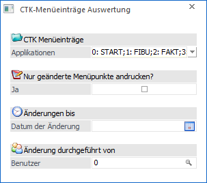
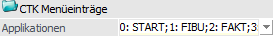
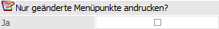
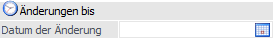
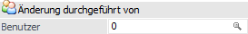
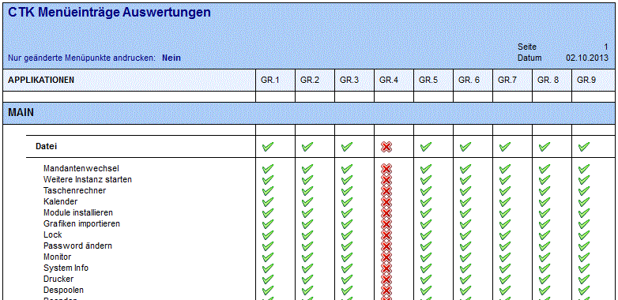
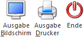

Im Menüpunkt…
1 Benutzer
1 CTK-Menüeinträge Auswertung
… können pro Systembenutzergruppe die im Programm Customizing Toolkit (CTK) hinterlegten Änderungen für Menüeinträge in tubulärer Form auswerten werden.

CTK Menüeinträge

Ø Applikationen
An dieser Stelle können über eine Mehrfachauswahlliste die Applikations-Bereiche definiert werden, für welche die hinterlegten Menüeinträge des CTKs ausgewertet werden sollen.
Nur geänderte Menüpunkte andrucken?

Ø Nur geänderte Menüpunkte andrucken
Bei Aktivierung dieser Option werden nur all jene Menüpunkte ausgegeben, auf welche die Benutzergruppe (aufgrund der CTK-Anpassung) kein Zugriff mehr hat.
Änderungen bis

Ø Datum der Änderung
Jede Änderung im WinLine CTK wird mit einem Zeitstempel versehen. An dieser Stelle kann angegeben werden, was die jüngsten auszuwertenden Änderungen sein sollen.
Änderung durchgeführt von

Ø Benutzer
Jede Änderung im WinLine CTK wird mit dem Benutzer der Änderung gespeichert. An dieser Stelle kann angegeben werden, welcher Änderungsbenutzer ausgewertet werden soll.
Beispiel einer CTK-Menüeintrags-Auswertung
In der folgenden Abbildung sind die Menüpunkte im Menü "Datei" für Systembenutzergruppe 4 als "geändert" gekennzeichnet.

Eine Änderung kann aus eine reine Abänderung von der Bezeichnung des Menüpunktes bestehen oder auch eine Sperre des Menüpunktes im WinLine CTK für den Zugriff durch Benutzer aus der jeweiligen Systembenutzergruppe darstellen.
Hinweis
Der Anzeigestatus für einen Menüpunkt in dieser Auswertung bezieht sich nur auf die Einstellungen in WinLine CTK. Es können auch andere Berechtigungs-Systemen in der WinLine den Zugriff auf einen Menüpunkt steuern, beispielsweise ob der Benutzer ein Systemadministrator ist.
Buttons

Ø Ausgabe Bildschirm
Durch Anwahl des Buttons "Ausgabe Bildschirm" bzw. der Taste F5 wird die Auswertung am Bildschirm ausgegeben.
Ø Ausgabe Drucker
Bei Anwahl des Buttons "Ausgabe Drucker" wird die Auswertung auf den Drucker ausgegeben.
Ø Ende
Durch Drücken des Buttons "Ende" oder der ESC-Taste wird das Fenster geschlossen.